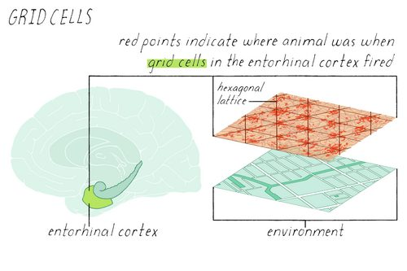

Un GPS en el cerebro
Para orientarnos, el cerebro combina información de la vista, el oído interno, los músculos y la memoria. En el hipocampo y la corteza entorrinal hay neuronas especializadas:
- Células de lugar: se activan cuando el animal está en un punto concreto del espacio. Las descubrió John O'Keefe en 1971 en ratas.
- Células de rejilla: se activan en múltiples puntos que forman una malla hexagonal, como un sistema de coordenadas. Las descubrieron May-Britt y Edvard Moser en 2005.
- Células de dirección de la cabeza, de borde y otras.
O'Keefe y los Moser recibieron el Nobel de Medicina en 2014. En humanos se han encontrado células similares en pacientes con electrodos implantados por epilepsia.
Taxistas de Londres
Los taxistas que memorizan las miles de calles de Londres tienen un hipocampo posterior más grande que otras personas, y crece mientras estudian: un ejemplo de plasticidad.
Perderse como síntoma
La corteza entorrinal es de las primeras zonas dañadas en la enfermedad de Alzheimer, por eso desorientarse en lugares conocidos puede ser un síntoma temprano. Se investigan pruebas de navegación en realidad virtual para detectarlo.
Fuentes
- Moser EI, Kropff E, Moser MB. Place cells, grid cells, and the brain's spatial representation system. Annu Rev Neurosci. 2008;31:69-89. doi:10.1146/annurev.neuro.31.061307.090723.
- Maguire EA, et al. Navigation-related structural change in the hippocampi of taxi drivers. Proc Natl Acad Sci USA. 2000;97:4398-403. doi:10.1073/pnas.070039597.
- The Nobel Prize. The Nobel Prize in Physiology or Medicine 2014.